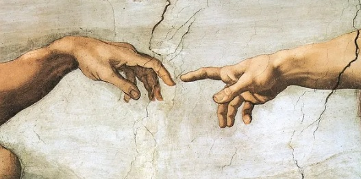
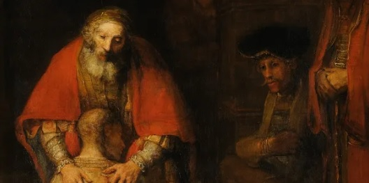
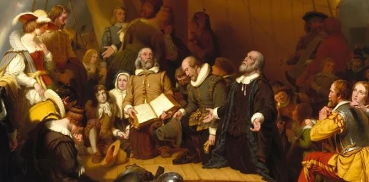

Creemos en un solo Dios: Padre, Hijo y Espíritu Santo.

Creemos en Dios Padre Todopoderoso, Creador del cielo y de la tierra, de todo lo visible e invisible.Creemos en Dios Padre Todopoderoso, Creador del cielo y de la tierra, de todo lo visible e invisible.
Creemos en Jesucristo, el eterno Hijo de Dios, Luz de Luz, Dios de Dios. Se encarnó por obra del Espíritu Santo en el seno de la virgen María, plenamente Dios y plenamente hombre.
Vivió una vida sin pecado. Fue crucificado como expiación sustitutiva por el pecado y resucitó corporalmente al tercer día. Ascendió a la diestra del Padre donde reina sobre todo. Él vendrá otra vez en gloria, corporal y visiblemente, para juzgar a los vivos y a los muertos.
Creemos en el Espíritu Santo, que debe ser adorado y glorificado con el Padre y el Hijo. Él regenera el corazón del pecador, mora en cada cristiano, convence de pecado, nos ayuda en nuestra debilidad y nos capacita para vivir una vida cristiana fructífera.
Creemos en el Evangelio, las buenas nuevas de salvación.

Creemos que la humanidad fue originalmente creada buena pero cayó en un estado de pecado por la desobediencia. Heredamos una naturaleza pecaminosa de Adán y cometemos pecados individuales. Este pecado nos separa de Dios y nos hace imposible ganar la salvación por obras.
Creemos que en Su vida, muerte, resurrección y ascensión, Jesucristo logró la salvación de los pecadores. En Su vida, guardó la ley de Dios a nuestro favor. En Su muerte, Él sufrió como nuestro sustituto y satisfizo la ira divina que merecíamos. Él tomó nuestra culpa sobre Sí mismo y acreditó Su justicia a nuestra cuenta. En Su resurrección, recibimos novedad de vida ahora y vida eterna por venir. En Su ascensión, derramó el Espíritu Santo sobre Su iglesia y continuamente intercede por nosotros. Toda esta salvación es la obra gratuita y misericordiosa de Dios solamente.
Creemos que uno recibe los méritos de Jesucristo al arrepentirse del pecado, creer en las buenas nuevas de Su muerte y resurrección, y confesarlo como Señor y Salvador. Como señal de esta salvación, todo creyente profeso debe ser bautizado por inmersión.
Creemos que la experiencia de la salvación consiste en la regeneración, la justificación, la santificación y la glorificación futura.
Creemos que las buenas obras son el fruto (no la raíz) de la salvación de todo cristiano, y que todo cristiano está llamado a ser testigo del Evangelio.
Creemos en la Biblia, la santa Palabra de Dios.
Creemos que la Biblia es la Palabra de Dios inspirada, infalible y autorizada. Creemos que el Espíritu Santo inspiró los escritos originales de las Escrituras y que los escritos originales no tienen error.
Creemos que aunque Dios en Su plenitud está más allá de la comprensión, Él revela en las Escrituras todo lo que necesitamos saber acerca de Él, todo lo que necesitamos saber para ser salvos y todo lo que necesitamos saber para vivir una vida piadosa. Creemos que la Biblia es la autoridad final en todos los asuntos de fe, verdad, moralidad y vida cristiana.
Creemos que la Biblia enseña que Dios ha hecho a cada persona a Su imagen y que la vida es sagrada desde la concepción. Creemos que la Biblia enseña que el hombre y la mujer son géneros distintos y complementarios y una buena parte del diseño original de la creación de Dios. Creemos que la Biblia enseña que el matrimonio es un pacto de por vida entre un hombre y una mujer y que toda intimidad sexual está diseñada solo para estos parámetros.
Creemos en la Iglesia: el pueblo mundial de Dios reunido en cuerpos locales.

Creemos en un pueblo mundial de Dios compuesto por todos los redimidos de todas las edades y de todas las tribus, lenguas y naciones que poseen la verdadera fe en Jesucristo. En la era del Antiguo Testamento, esta fe estaba en la promesa de Dios de enviar un Mesías.
Creemos que desde el Día de Pentecostés este cuerpo mundial consta de congregaciones locales de creyentes bautizados. Esta asamblea local está unida por la fe y la comunión del evangelio y observa las dos ordenanzas del bautismo y la Cena del Señor dadas por Cristo. Creemos que la iglesia está gobernada por las leyes de Cristo, ejerce los dones que Él da a través del Espíritu Santo, se sirve unos a otros en amor y busca extender el evangelio hasta los confines de la tierra. Creemos que la iglesia local se reúne en el Día del Señor, el primer día de la semana, en observancia de la resurrección de Cristo.
Creemos que cada congregación debe ser dirigida por ancianos (pastores) y diáconos. Aunque tanto hombres como mujeres tienen dones para el servicio en la iglesia, las Escrituras limitan el oficio de pastor a los hombres. La iglesia local es responsable del discipulado, la disciplina y la administración de las ordenanzas de Cristo.